An open kitchen built around Birbhum's own pantry — river fish, mustard, and rice grown within sight of the dining room. Panchmeshali serves multi-cuisine through the day, but its heart is Bengali, everything plated on terracotta the resort has thrown itself.
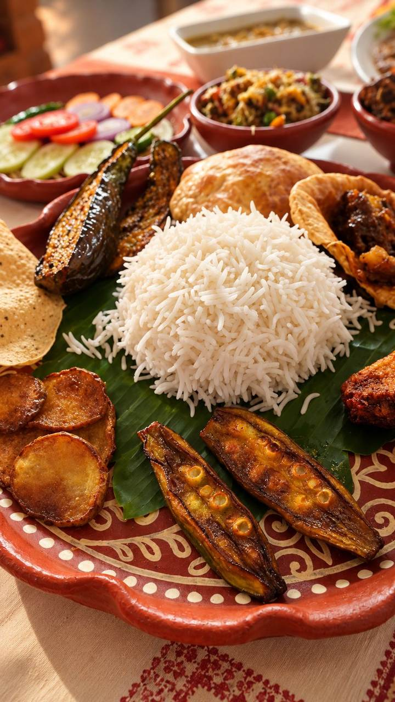
Steamed rice at the centre, a shukto of five vegetables, a fish curry sharpened with mustard, and whatever the kitchen fried that morning — okra, potato, a dal on the side. Nothing arrives all at once; it is brought out the way a home kitchen would.
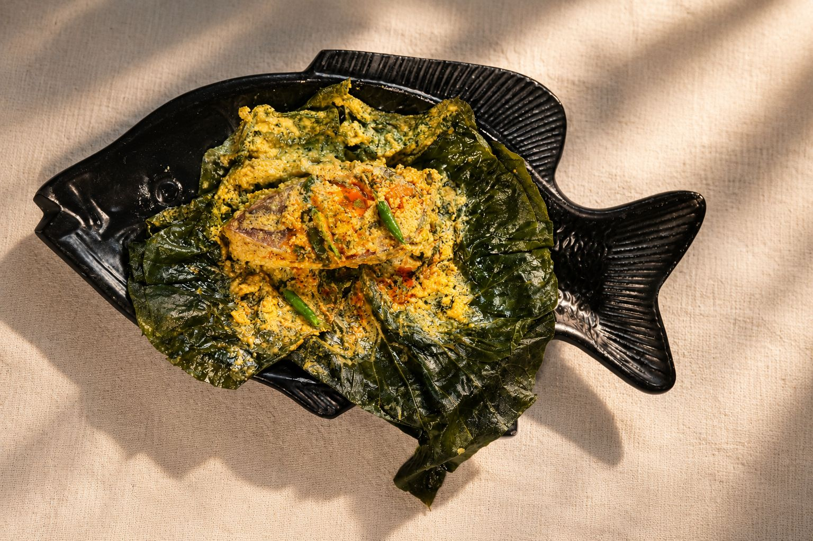
Paturi — river fish rubbed with mustard and coconut, wrapped in banana leaf and steamed — is plated here the way Birbhum kitchens have always shaped it: whole, unhurried, and finished at the table.
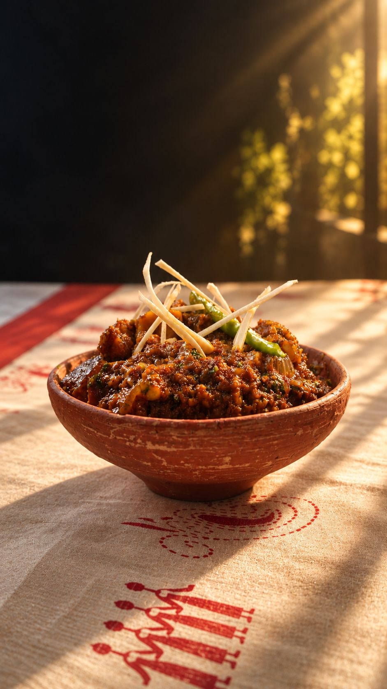
Mutton and country chicken are cooked down slowly and served the way Birbhum has always served them — in a bowl of unglazed clay, on hand-block linen, with green chilli and a twist of ginger on top.
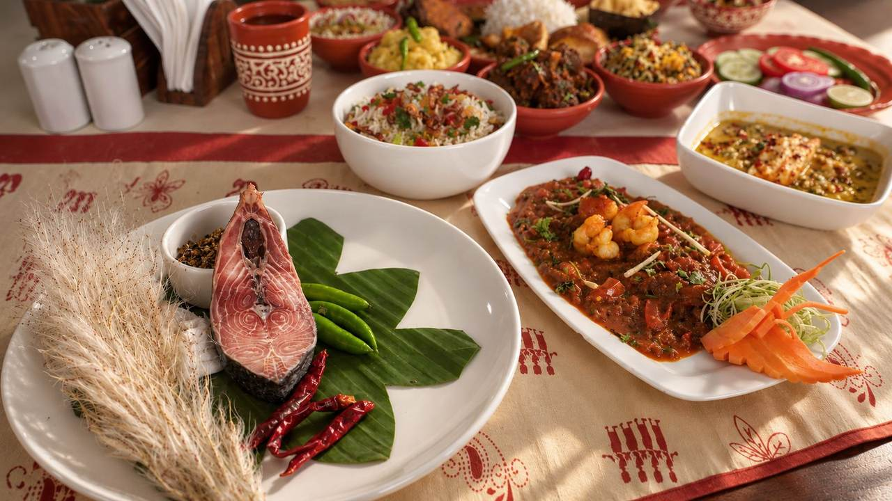
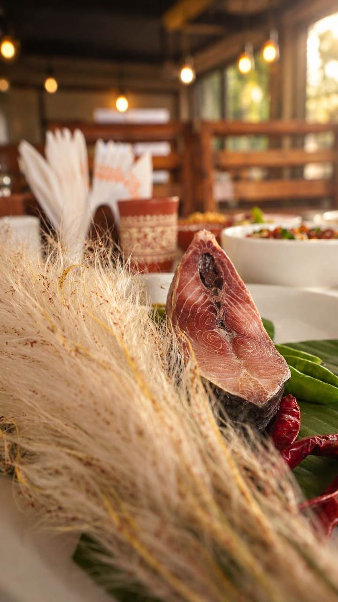
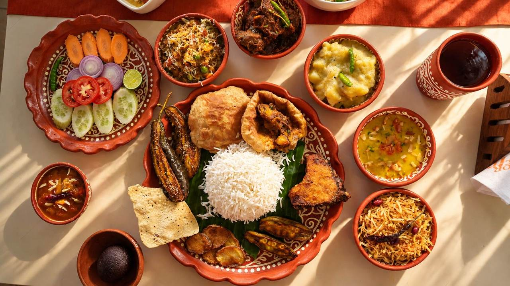
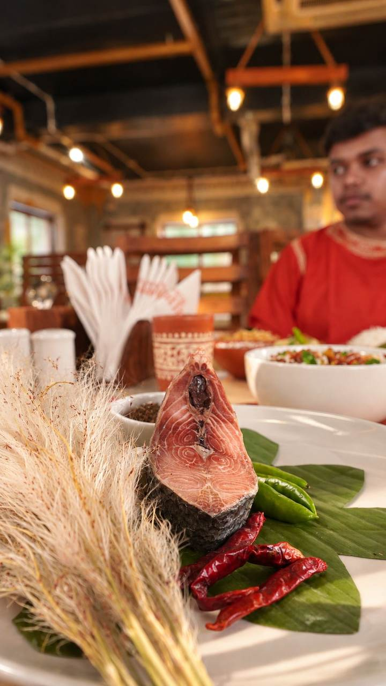
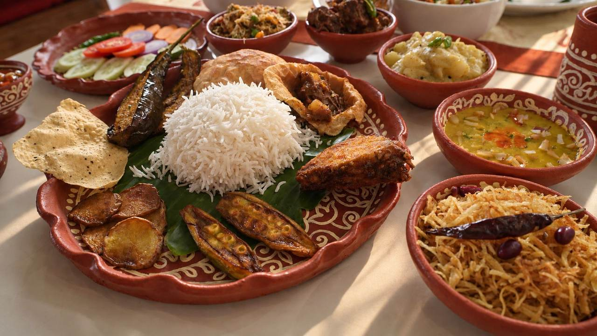
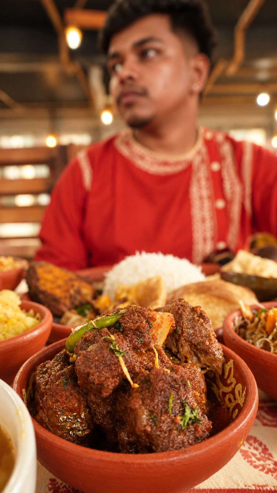
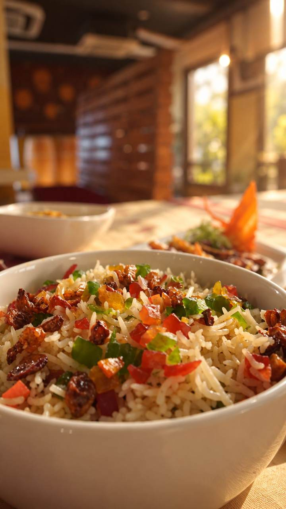
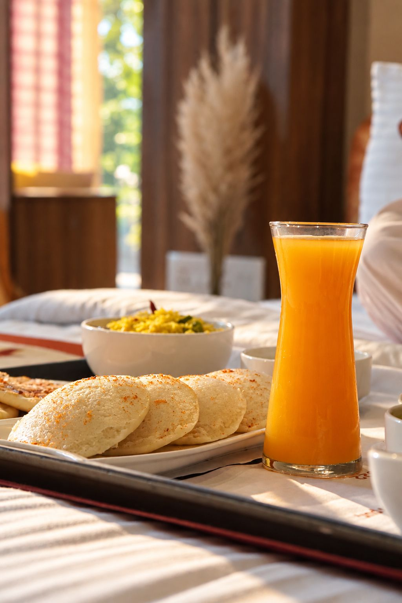
Luchi and curry, a glass of fresh juice, tea brought up before the day gets warm — in-room dining runs the same menu as the restaurant, for the mornings you would rather not leave the room.